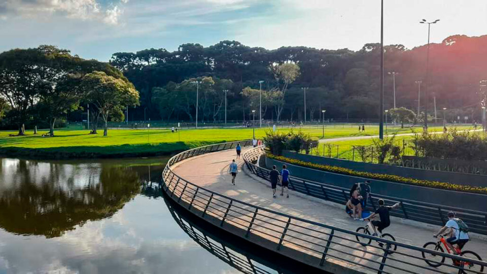
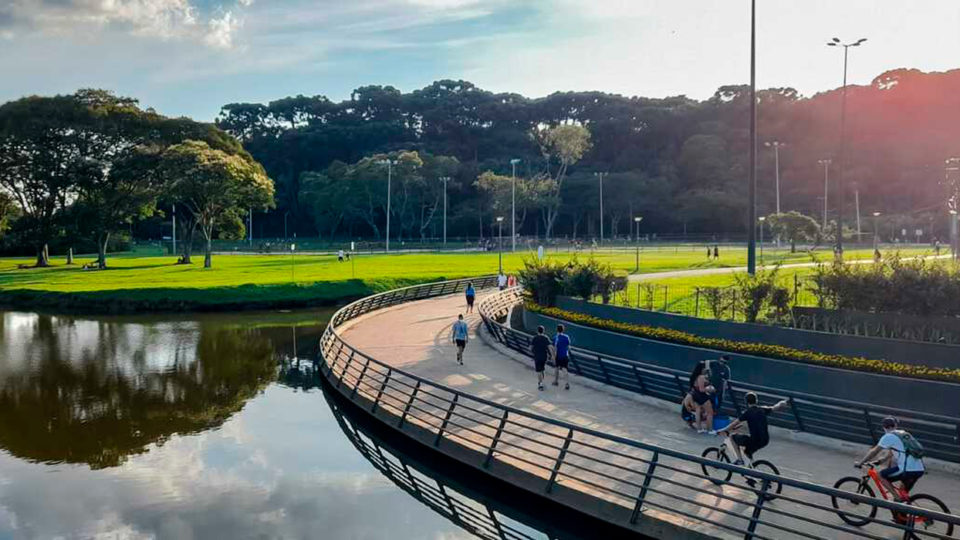
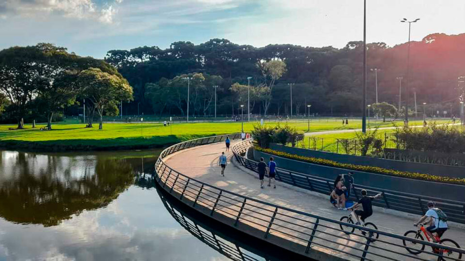

O Parque Barigui, localizado em Curitiba, Brasil, é um verdadeiro oásis urbano que oferece uma variedade de atividades ao ar livre para os moradores locais e visitantes. Com uma extensa área verde de aproximadamente 1.400.000 metros quadrados, o parque é um destino popular para caminhadas, corridas, piqueniques e atividades recreativas. Uma das características mais distintas do Parque Barigui é o seu grande lago, onde se pode encontrar uma diversidade de aves aquáticas, como patos e garças, além de ser um local ideal para a prática de remo e passeios de pedalinho. Além disso, o parque oferece uma infraestrutura completa, incluindo trilhas para caminhadas e ciclismo, áreas de recreação infantil, quadras esportivas e espaços para churrasco, tornando-o um local ideal para famílias, grupos de amigos e amantes da natureza desfrutarem de momentos de lazer e relaxamento. Com sua atmosfera tranquila e belas paisagens naturais, o Parque Barigui é um lugar imperdível para quem visita ou vive em Curitiba, proporcionando uma escapada revitalizante do ritmo agitado da vida urbana.

| Fauna | Flora |
|---|---|
| Capivara | Araucária |
| Garça-branca | Erva-Mate |
| Carcará | Pitangueira |
| Biguá | Vassourão-branco |
| Tapicuru | Bromélia |
| Caraúna | Bromélia |
| Colhereiro | Ipê roxo |
| Quero-quero | Guabirotuba |